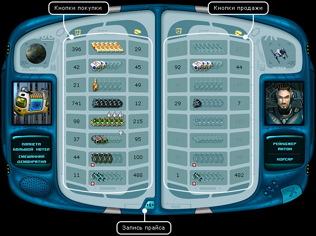
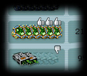
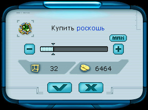
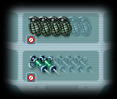

Руководство рейнджера > Экран
планеты > Торговый центр (T)
|
Руководство рейнджера > Экран
планеты > Торговый центр (T)
|
| Торговый центр (T) В игре существует восемь групп товаров: еда, медикаменты, техника, роскошь, минералы, алкоголь, оружие и наркотики. Все это можно покупать или продавать в торговом центре. В левой части окна можно видеть количество товара каждого вида на планете и цену, за которую этот товар можно купить. Справа показывается количество товара на корабле и цена, за которую этот товар можно продать. |

|  Для удобства игрока в центральной части экрана рядом с иконками товаров показываются кулаки с опущенными или поднятыми большими пальцами: если конкретные товары выгодно покупать, то иконка кулака с поднятым вверх большим пальцем сигнализирует вам об этом, и наоборот. Эта возможность предусмотрена для тех пользователей, которые не любят скрупулезно запоминать цифры в поисках наиболее выгодной сделки, а хотят, чтобы процесс купли-продажи был легким и приятным. :-) |
| Чтобы купить определенный товар: 1. В левой части окна щелкните по панельке с изображением нужного вам товара. В центре экрана появится всплывающее окно "Покупка".  2. Установите количество покупаемого товара (при помощи бегунка или кнопки "Максимум"). 3. Нажмите кнопку OK. Примечание. Вы не сможете купить товар на сумму, превышающую количество ваших наличных денег, или в объеме, превышающем количество свободного места на вашем корабле. |
| Чтобы продать определенный товар: 1. В правой части окна щелкните по панельке с изображением товара, который собираетесь продать. Появится диалоговое окно "Продажа". 2. Установите количество продаваемого товара (при помощи бегунка или кнопки "Максимум"). 3. Нажмите кнопку OK. Примечание. Собираясь продавать товар, посмотрите за сколько этот товар был вами куплен. Для этого подведите мышь к интересующему вас товару в правой части окна и вы увидите текстовую подсказку на "Панели навигации". Цена товара Цена товара на каждой планете определяется множеством факторов. Она зависит не только от проживающей расы и экономического типа планеты, но и от интенсивности грузоперевозок. Цены формируются динамически. Сегодня планета может нуждаться в определенном товаре, и цены на него там очень высоки. Но уже через месяц цена может резко опуститься из-за наплыва торговцев с данным видом товара. Поэтому следует внимательно прислушиваться к советам пролетающих мимо коммерсантов и читать экономические новости в информационном центре. Тогда, совершая удачные торговые сделки, можно существовать вполне безбедно. Совет. Для того чтобы запомнить цены товаров на данной планете, щелкните по значку Внимание! Существует еще более удобный способ просмотра прайсов на планетах. Вы можете узнать цены торгового центра, не совершая посадку на планету. Для этого вам достаточно кликнуть один раз правой кнопкой мышки по планете, и на панели навигации появится иконка с прайсом. Получение прайса таким образом возможно только в зоне действия радара. Чтобы получить прайсы со всех планет и станций в зоне действия радара нажмите клавишу Insert. Запрещенные товары  Часто коммерчески выгодные рейсы связаны с запрещенными товарами. Рейнджер сам решает, нарушать ли ему закон или жить честно. Так, можно легально покупать наркотическую продукцию у пеленгов и прибыльно сбывать ее гаальцам. Это принесет огромные деньги. Но правительство гаальской планеты будет недовольно подобными действиями рейнджера, и быстро изменит свое отношение к нему на плохое. Поэтому впоследствии контрабандисту придется или затратить немало усилий и денег, чтобы вернуть хорошее расположение, или облетать гаальские планеты стороной...При совершении незаконной сделки всегда выдается предупреждение, поэтому не беспокойтесь, случайно нарушить закон вы не сможете. Легальность товара на планете зависит от двух факторов: проживающая раса и государственный строй. |